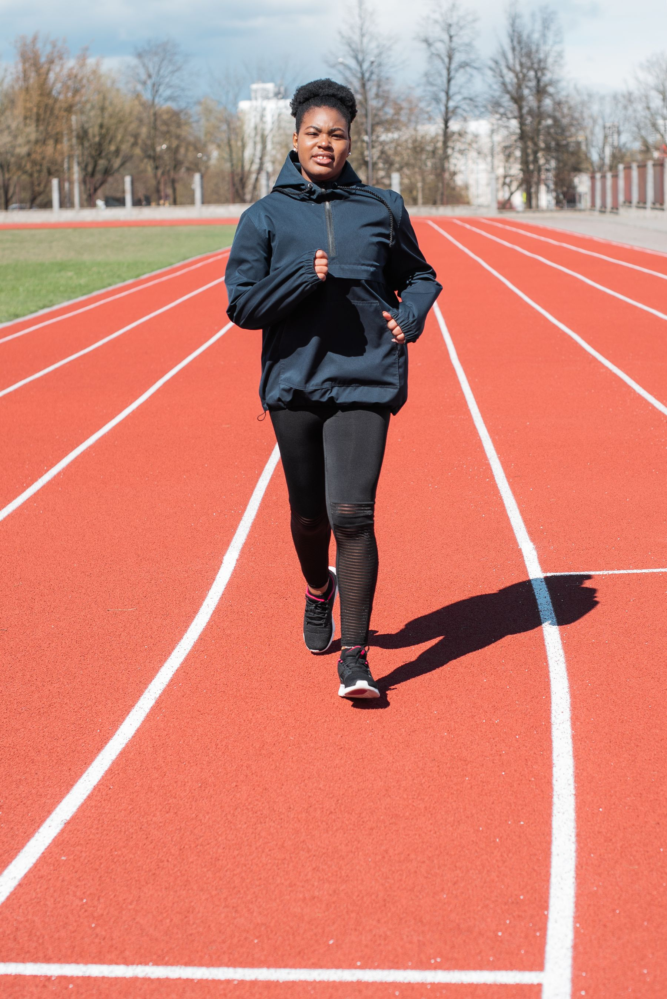
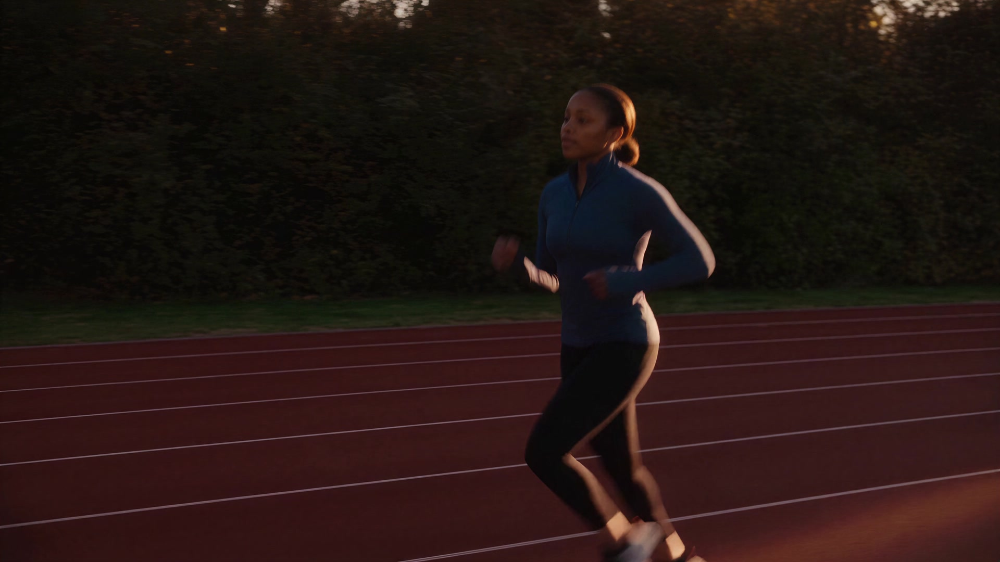
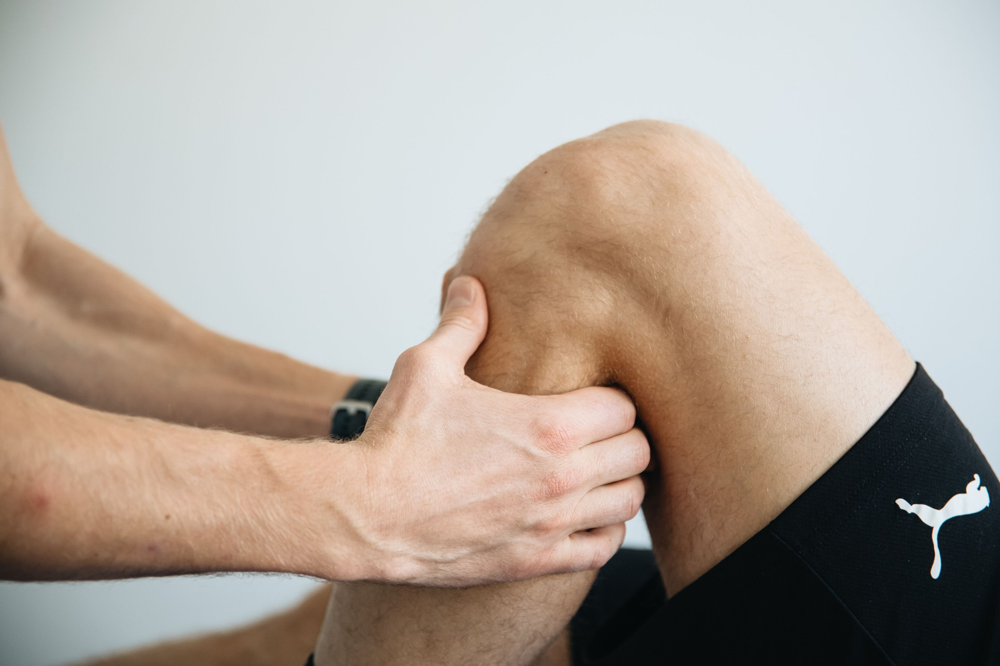
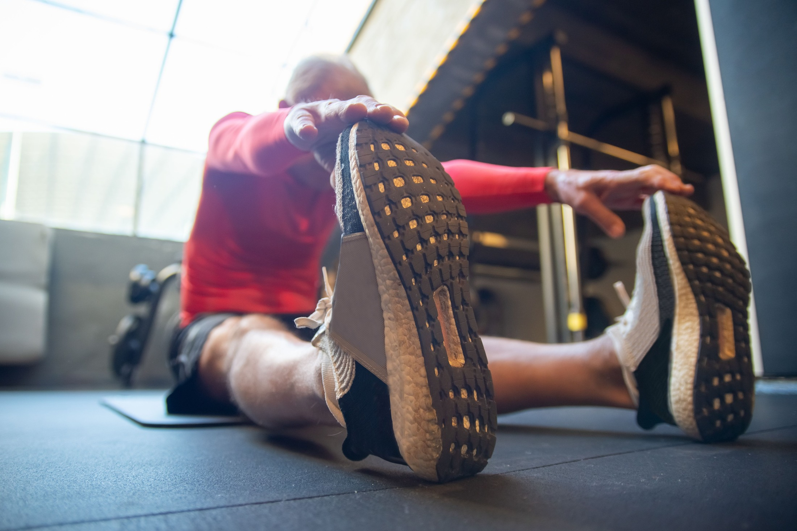
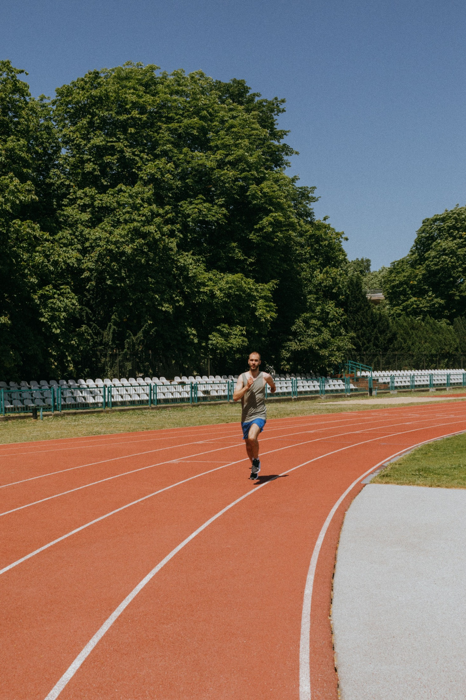

01 / RETURN TO YOUR SPORTSports injury
rehabilitation.
Work toward the strength and confidence to get back to the activities you love.
Explore sports rehab
Sports & orthopedic rehabilitation
Physical therapy built around your movement, your recovery and the life you want to get back to.
Family-owned since 2003 · 10 Chicago-area clinics
A way forward
Back to your sport. Back to your routine.
Start with what matters to you.

01 / RETURN TO YOUR SPORTWork toward the strength and confidence to get back to the activities you love.
Explore sports rehab
02 / REBUILD WITH SUPPORTTake the next step after surgery with care shaped around your recovery and your goals.
Explore postsurgical care
03 / MOVE THROUGH EVERY DAYWalking the neighborhood. Taking the stairs. Build toward more comfortable, confident movement.
Explore balance & mobilityThe whole you
Your sore knee is part of a bigger picture. So are the stairs you want to climb and the sport you want to return to.
Your therapist looks at how you move, listens to what feels difficult and builds your care around the things you want to do again.
Meet the people behind your careExplore care
Find a starting point for your recovery.
Open a service to see where it’s offered.
Support for the movement, strength and control your sport asks of you.
Available at Beverly, Bridgeport, Edison Park, Evanston, Glenview, Highland Park, Lake Forest, Lincoln Park and Sauganash.
Explore sports injury rehabWork toward your everyday activities after surgery with a plan suited to your recovery.
Available at All 10 clinics.
Explore postsurgical careBuild toward the activities you want to return to after an ACL injury or surgery.
Available at Beverly, Bridgeport, Edison Park, Evanston, Glenview, Highland Park, Lake Forest, Lincoln Park and Sauganash.
Explore ACL rehabCare focused on the movement and daily activities that matter after joint replacement.
Available at Beverly, Bridgeport, Edison Park, Evanston, Glenview, Highland Park, Lake Forest, Lincoln Park and Sauganash.
Explore joint replacement rehabSupport for the hand and wrist movements you rely on at home, at work and in your hobbies.
Available at Beverly, Bridgeport, Edison Park, Evanston, Glenview, Lincoln Park and Sauganash.
Explore hand therapyCare centered on the daily tasks you want to do with greater ease and independence.
Available at Beverly, Bridgeport, Edison Park, Evanston, Glenview and Lincoln Park.
Explore occupational therapyPersonal care for pelvic-floor concerns, with space to discuss what you’re experiencing.
Available at Glenview.
Explore pelvic floor therapyWork on balance and steadiness to help you feel more confident in everyday movement.
Available at Beverly, Bridgeport, Edison Park, Evanston, Glenview, Highland Park, Lake Forest, Lincoln Park and Sauganash.
Explore balance careCare for dizziness, balance concerns and concussion recovery.
Vestibular care Edison Park, Bridgeport and Lincoln Park.
Concussion care Edison Park.
Rehabilitation built around the movements and tasks your work requires.
Available at All 10 clinics.
Explore work injury careNot sure where to start? Tell us what feels difficult.
View all servicesRooted in your community
Chicago-area clinics.
Find care close to your everyday life.
10909 S. Western Ave
Chicago, IL 60643
412 W 31st St
Chicago, IL 60616
7258 N Harlem Ave
Chicago, IL 60631
2536 Ewing Ave
Evanston, IL 60201
2747 Pfingsten Rd
Glenview, IL 60026
1855 Deerfield Rd
Suite B
Highland Park, IL 60035
1361 N Western Ave
Lake Forest, IL 60045
1148 W Diversey Pkwy
Chicago, IL 60614
6456 W Archer Ave
Chicago, IL 60638
6021 N Cicero Ave
Chicago, IL 60646
Specialty services vary by clinic. Explore care above to find the right location for your needs.

Start where you are
Tell us what you need help with.
Take the first step toward care built around you.